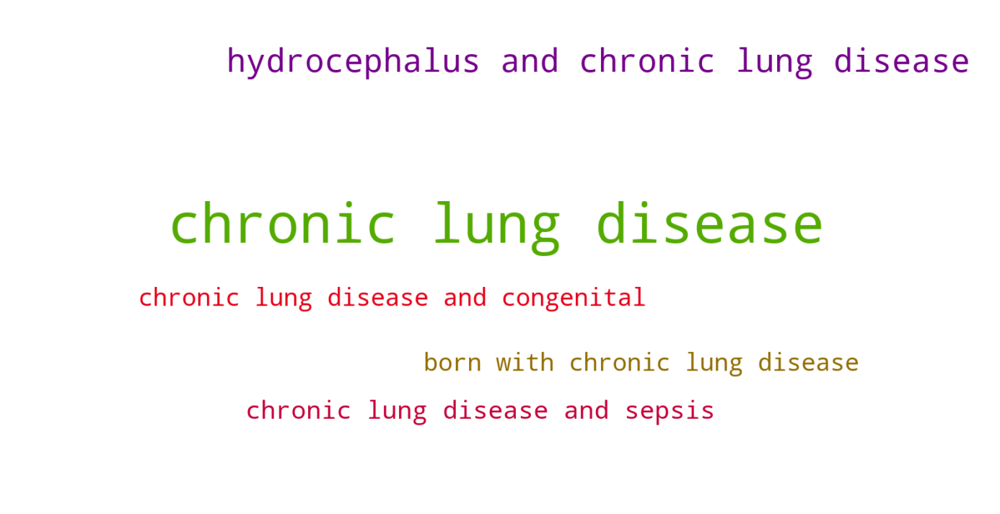

Jump to section:
Samples from Social CorpusHits per UMLS Alias on Social Corpus
Word Cloud Comparison
Embedding Space Comparison
Nearest Neighbors by Semantic Type
Related Analysed Concepts
Samples from Social Corpus
My son was born with chronic lung disease and congenital dislocations in his arms and legs .
Confidence: 0.816. Reddit link
I'm just not ready yet My dad has a chronic lung disease .
Confidence: 1.000. Reddit link
She has BPD / chronic lung disease , mild pulmonary hypertension , and an ASD .
Confidence: 1.000. Reddit link
Outside of NICU and almost two years on , we are living with cerebral palsy , epilepsy , managed hydrocephalus and chronic lung disease .
Confidence: 0.767. Reddit link
During the first four months of Oliver's life and his elongated stay in NICU , we had to battle through brain bleeds , septicemia , multiple infections , hydrocephalus , chronic lung disease , inguinal hernias and pneumonia .
Confidence: 1.000. Reddit link
She fought for 72 days in the NICU , chronic lung disease and sepsis to get to where she is now ❤️ It gets better ! !
Confidence: 0.861. Reddit link
He has a VP shunt , had severe brain bleeds , has low vision , chronic kidney disease , chronic lung disease , and has a genetic disease called neurofibromatosis type 1 which has caused an optic glioma .
Confidence: 1.000. Reddit link
Hits per UMLS Alias on Social Corpus
-
chronic lung disease
14 hits
-
chronic disease lung
0 hits
-
chronic diseases lung
0 hits
-
lung disease chronic
0 hits
-
chronic lung disorder
0 hits
-
chronic lung disease disorder
0 hits
-
cld
0 hits
Word Cloud Comparison
Keywords matching C0746102
Keywords matched against concept. Word size represents frequency.
Keywords co-occurring with C0746102
Co-occurrence is measured at the document-level (i.e. Reddit submissions). Frequencies are normalized to account for keywords common to all CUIs.

Embedding Space Comparison
T-SNE comparison for word embeddings learned from medical domain (EuroPMC) and social media (Reddit) independently.
Pearson correlation for union of closest 1000 neighbors: 0.013
Nearest Neighbors by Semantic Type
Most similar concepts in each of the selected UMLS semantic types. Based on concept embeddings from social corpus.
T047 (Disease or Syndrome)
-
C0746102
Chronic lung disease
1.000 Similarity
-
C0008679
Chronic illness
0.951 Similarity
-
C0024115
Lung disease
0.856 Similarity
-
C0007350
Disease cat
0.849 Similarity
-
C0085132
Sly disease
0.839 Similarity
-
C2350344
Chronic lung injury
0.837 Similarity
-
C0744939
Chronic hip pain
0.837 Similarity
-
C0012634
Condition
0.823 Similarity
T079 (Temporal Concept)
-
C0205191
Chronic
0.842 Similarity
-
C0439588
Acute chronic
0.807 Similarity
-
C2826771
Birth year
0.539 Similarity
-
C4274169
Entire life
0.531 Similarity
-
C0032790
After surgery
0.518 Similarity
-
C2945760
Recurrent
0.517 Similarity
-
C4025592
Late onset
0.515 Similarity
-
C0205178
Acute
0.491 Similarity
T184 (Sign or Symptom)
-
C0150055
Chronic pain
0.803 Similarity
-
C0740418
Chronic back pain
0.799 Similarity
-
C0404484
Chronic pelvic pain
0.763 Similarity
-
C0221423
Sick
0.664 Similarity
-
C0700200
Presyncope
0.599 Similarity
-
C0238740
Severe back pain
0.597 Similarity
-
C4042866
Flareup symptom
0.595 Similarity
-
C0812426
Kidney trouble
0.587 Similarity
T046 (Pathologic Function)
-
C0333278
Chronic hemorrhage
0.738 Similarity
-
C0443146
Autoimmune
0.714 Similarity
-
C0036429
Sclerosis
0.655 Similarity
-
C4075684
Hypoxemia during surgery
0.611 Similarity
-
C0001122
Acidosis
0.608 Similarity
-
C0333513
Fibrinoid degeneration
0.602 Similarity
-
C0041582
Ulcer
0.594 Similarity
-
C0007642
Cellulitis
0.591 Similarity
T048 (Mental or Behavioral Dysfunction)
-
C0236792
Aspergers disease
0.725 Similarity
-
C0581391
Chronic depression
0.697 Similarity
-
C0013415
Dysthymia
0.654 Similarity
-
C0683407
Bipolar schizoaffective disorders
0.615 Similarity
-
C0036337
Disorder schizoaffective
0.600 Similarity
-
C0683278
Suffering
0.596 Similarity
-
C0233705
Fear getting cancer
0.589 Similarity
-
C0525045
Mood disorder
0.589 Similarity
T019 (Congenital Abnormality)
-
C0152021
Congenital heart disease
0.720 Similarity
-
C0019555
Dislocated hip since birth
0.609 Similarity
-
C0149530
Congenital heart block
0.568 Similarity
-
C0266449
Brain malformation
0.567 Similarity
-
C4551649
Hip dysplasia developmental
0.566 Similarity
-
C0266294
Kidney single
0.559 Similarity
-
C0027794
Neural tube defect
0.549 Similarity
-
C0000768
Birth defect
0.547 Similarity
T201 (Clinical Attribute)
-
C0012655
Predisposition
0.711 Similarity
-
C0521982
Successful treatment
0.504 Similarity
-
C1286272
Form bone
0.458 Similarity
-
C0080078
Mobility
0.456 Similarity
-
C0032930
Trigger
0.453 Similarity
-
C3174092
Medication dose
0.453 Similarity
-
C1719933
Skin condition
0.447 Similarity
-
C0231832
Breathing rate
0.421 Similarity
T060 (Diagnostic Procedure)
-
C0920688
Cancer diagnosis
0.637 Similarity
-
C1882082
New diagnosis
0.585 Similarity
-
C0011900
Diagnosed
0.585 Similarity
-
C0033053
Prenatal diagnoses
0.576 Similarity
-
C0871813
Medical diagnosis
0.566 Similarity
-
C0596473
Detection early
0.558 Similarity
-
C0024119
Function tests lung
0.527 Similarity
-
C0025365
Test mental
0.513 Similarity
T061 (Therapeutic or Preventive Procedure)
-
C0005961
Bone marrow transplant
0.610 Similarity
-
C0023911
Liver transplant
0.593 Similarity
-
C0193769
Thyroid surgery
0.573 Similarity
-
C0547605
Infection prevention
0.564 Similarity
-
C0040732
Transplant
0.562 Similarity
-
C2827950
Existing treatment
0.561 Similarity
-
C1708063
First line treatment
0.555 Similarity
-
C0020883
Ileostomy
0.554 Similarity
T037 (Injury or Poisoning)
-
C0160420
Kidney injury
0.607 Similarity
-
C0745339
Job related injury
0.561 Similarity
-
C0332666
Injuries old
0.558 Similarity
-
C0856239
Injury at work
0.537 Similarity
-
C0004601
Back injury
0.536 Similarity
-
C0160111
Sprained back
0.536 Similarity
-
C0281865
Hip injuries
0.533 Similarity
-
C0160073
Other hand sprain
0.523 Similarity
T023 (Body Part, Organ, or Organ Component)
-
C0024109
Lung
0.593 Similarity
-
C0030274
Pancreas
0.569 Similarity
-
C0030518
Parathyroid gland
0.563 Similarity
-
C0225730
Left lung
0.562 Similarity
-
C0229889
Lymphatic
0.554 Similarity
-
C0024204
Lymph nodes
0.546 Similarity
-
C0040132
Thyroid
0.543 Similarity
-
C0009368
Colon
0.538 Similarity
T190 (Anatomical Abnormality)
-
C0016169
Sinus
0.591 Similarity
-
C4703723
Muscle issues back
0.523 Similarity
-
C1328407
Hip dysplasia
0.479 Similarity
-
C0019270
Hernia
0.463 Similarity
-
C1265602
Multiple masses
0.459 Similarity
-
C0019294
Inguinal hernia
0.451 Similarity
-
C0332447
Anomaly
0.439 Similarity
-
C3887598
Clubbed hand
0.435 Similarity
T101 (Patient or Disabled Group)
-
C0682161
Dually diagnosed
0.587 Similarity
-
C1456639
Living with cancer
0.562 Similarity
-
C0871503
Dying patients
0.552 Similarity
-
C0008098
Child hospitalized
0.550 Similarity
-
C0259916
Disabled child
0.548 Similarity
-
C0018576
Disabled
0.545 Similarity
-
C0260101
Sick child
0.508 Similarity
-
C1516213
Cancer patient
0.506 Similarity
T005 (Virus)
-
C0086776
Parvovirus
0.579 Similarity
-
C0205939
Cold virus common
0.570 Similarity
-
C0205676
T viruses
0.526 Similarity
-
C0042776
Virus
0.519 Similarity
-
C4433204
King virus
0.508 Similarity
-
C0597404
Respiratory virus
0.500 Similarity
-
C0018895
Helper viruses
0.499 Similarity
-
C5058350
Fairfax lookout virus
0.497 Similarity
T059 (Laboratory Procedure)
-
C0040130
Thyroid tests
0.562 Similarity
-
C0023901
Liver tests
0.514 Similarity
-
C0393006
Genetic testing
0.488 Similarity
-
C0679560
Genetic test
0.479 Similarity
-
C0018941
Blood test
0.477 Similarity
-
C0580327
Antibodies test
0.469 Similarity
-
C0368930
Clotting time
0.463 Similarity
-
C0019633
Tissue type
0.462 Similarity
T049 (Cell or Molecular Dysfunction)
-
C1705285
Mutated
0.541 Similarity
-
C0544885
Stop gain
0.535 Similarity
-
C4725191
Stop lost
0.500 Similarity
-
C0002938
Aneuploidy
0.442 Similarity
-
C0008628
Del
0.421 Similarity
-
C0040715
Translocation
0.411 Similarity
-
C0008625
Chromosomal abnormality
0.388 Similarity
-
C0041107
Trisomy
0.365 Similarity
T042 (Organ or Tissue Function)
-
C0542330
Function joint
0.536 Similarity
-
C0232741
Liver function
0.527 Similarity
-
C0232804
Kidney function
0.524 Similarity
-
C0005778
Clotting
0.488 Similarity
-
C1160388
Respiratory tube development
0.477 Similarity
-
C0042396
Vasospasm
0.473 Similarity
-
C0678908
Brain function
0.469 Similarity
-
C0020965
Active immunity
0.459 Similarity
T039 (Physiologic Function)
-
C3852954
Physiome
0.532 Similarity
-
C0035245
Lung function
0.518 Similarity
-
C0031843
Function
0.491 Similarity
-
C0599423
Joint stress
0.479 Similarity
-
C1135927
Herd immunity
0.473 Similarity
-
C0020964
Immunity
0.468 Similarity
-
C0005775
Circulation
0.460 Similarity
-
C1514892
Resistance process
0.455 Similarity
T032 (Organism Attribute)
-
C0598779
Life history
0.524 Similarity
-
C0220898
Susceptible
0.515 Similarity
-
C0949285
Antibiotic resistance
0.505 Similarity
-
C3714565
Physical condition
0.489 Similarity
-
C0001779
Age
0.474 Similarity
-
C0019425
Heterozygous
0.473 Similarity
-
C0557155
Life event
0.456 Similarity
-
C0020969
Natural immunity
0.453 Similarity
T041 (Mental Process)
-
C0563143
Functioning mental
0.518 Similarity
-
C0017324
Generalization
0.516 Similarity
-
C0524369
Mid life crisis
0.497 Similarity
-
C0009647
Conditioned
0.487 Similarity
-
C0004448
Aware
0.481 Similarity
-
C0679201
Infer
0.474 Similarity
-
C3838995
Ability recognize symptoms
0.468 Similarity
-
C0871504
Test anxiety
0.459 Similarity
T031 (Body Substance)
-
C2983684
All tissues
0.513 Similarity
-
C1446336
Multiple plaques
0.495 Similarity
-
C0024202
Lymph
0.479 Similarity
-
C1442199
Blood or tissue
0.450 Similarity
-
C0225379
Upper respiratory fluid
0.437 Similarity
-
C4520494
Swab from foot
0.436 Similarity
-
C0007806
Spinal fluid
0.429 Similarity
-
C0015733
Crap
0.429 Similarity
T074 (Medical Device)
-
C0454152
Blocking kidney
0.508 Similarity
-
C0179188
Back brace
0.493 Similarity
-
C3879150
Vascular booties
0.484 Similarity
-
C0593622
Home pregnancy test
0.463 Similarity
-
C0027524
Nebulizer
0.455 Similarity
-
C3878454
Full body ct system
0.454 Similarity
-
C0492102
Splint temporary training
0.452 Similarity
-
C0030163
Pacemaker
0.445 Similarity
T067 (Phenomenon or Process)
-
C0034897
Recurring
0.507 Similarity
-
C0023983
Long term effects
0.489 Similarity
-
C0337240
Fall while being carried
0.487 Similarity
-
C0035020
Relapse
0.463 Similarity
-
C4055383
Biggest problem
0.436 Similarity
-
C0375737
Fall from toilet
0.432 Similarity
-
C0012652
Outbreak
0.430 Similarity
-
C0175921
Catalyst
0.413 Similarity
T054 (Social Behavior)
-
C1261512
Attack
0.502 Similarity
-
C0282657
Infibulations
0.499 Similarity
-
C0679426
Incompatibility
0.460 Similarity
-
C0680012
Infidelity
0.451 Similarity
-
C0026763
Multiple marriages
0.449 Similarity
-
C0814596
Problems with friend
0.448 Similarity
-
C4277668
Anti vaccine group
0.441 Similarity
-
C0582101
Talking about dying
0.432 Similarity
T195 (Antibiotic)
-
C0013090
Doxycycline
0.483 Similarity
-
C0003232
Antibiotics
0.474 Similarity
-
C0723285
Septa
0.408 Similarity
-
C0718950
Biomox
0.406 Similarity
-
C0718575
Antibiotics ear
0.401 Similarity
-
C0279516
Antibacterial
0.400 Similarity
-
C0002645
Amoxicillin
0.382 Similarity
-
C0028741
Nystatin
0.324 Similarity
T100 (Age Group)
-
C3146221
Juvenile
0.476 Similarity
-
C3494262
Extremely preterm infant
0.463 Similarity
-
C0680085
Early adulthood
0.447 Similarity
-
C4551581
Full term baby
0.446 Similarity
-
C0728836
Young child
0.432 Similarity
-
C0021289
Newborn
0.414 Similarity
-
C0008059
Child
0.401 Similarity
-
C4048294
Preterm baby
0.400 Similarity
T034 (Laboratory or Test Result)
-
C0427777
Pregnancy results tests
0.464 Similarity
-
C2266672
Clotting time finding
0.459 Similarity
-
C0741132
Antibody positive
0.456 Similarity
-
C0432636
Anti v
0.454 Similarity
-
C5206315
Nse positive
0.422 Similarity
-
C0240802
Positive pregnancy test
0.421 Similarity
-
C0456984
Test results
0.420 Similarity
-
C5201036
Low platelets
0.419 Similarity
T007 (Bacterium)
-
C0018154
Gram positive bacteria
0.440 Similarity
-
C0995648
Genus quinella
0.416 Similarity
-
C0022828
L forms
0.413 Similarity
-
C0014834
E coli
0.372 Similarity
-
C0004611
Bacteria
0.368 Similarity
-
C0036111
Salmonella
0.368 Similarity
-
C0579233
Group b strep
0.354 Similarity
-
C3801085
Enorma
0.354 Similarity
T200 (Clinical Drug)
-
C3218395
Papain pill
0.437 Similarity
-
C0723917
Triple antibiotic ointment
0.387 Similarity
-
C1242003
Mol iron tablets
0.374 Similarity
-
C0678431
Cough syrup
0.366 Similarity
-
C0982568
Multi vitamin inj
0.323 Similarity
-
C1163679
Injections sterile water
0.317 Similarity
-
C1251945
Hydrocortisone cream
0.299 Similarity
-
C0599396
Sleeping pills
0.299 Similarity
T018 (Embryonic Structure)
-
C0440731
Fetal brain
0.437 Similarity
-
C0231024
Neural tube
0.434 Similarity
-
C1284022
Trilaminar disc
0.416 Similarity
-
C0041637
Umbilical vein
0.393 Similarity
-
C0041632
Umbilical artery
0.392 Similarity
-
C3272697
Remnant
0.367 Similarity
-
C0041633
Umbilical cord
0.326 Similarity
-
C1278988
Entire placenta
0.323 Similarity
T044 (Molecular Function)
-
C0887940
Gene arrangements
0.401 Similarity
-
C1721104
Breaks dna
0.386 Similarity
-
C1150342
Dopachrome rearranging enzyme
0.362 Similarity
-
C0010357
Cross reactive
0.352 Similarity
-
C1149397
Heartless ligand
0.349 Similarity
-
C0301647
Strand breaks
0.340 Similarity
-
C1749457
Ligands activity
0.335 Similarity
-
C1167622
Physical interaction
0.331 Similarity